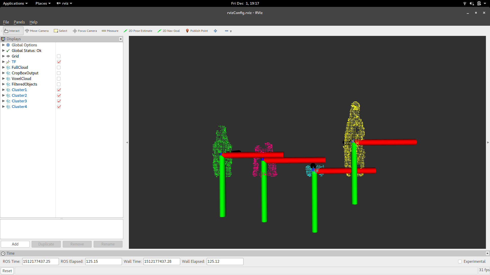

Skills & Concepts
- ROS
- C++
- Python
- Robotic Manipulation
- Point Clouds
- Git
- Coordinate Transformations
OVERVIEW
The goal of this project was to have Baxter identify objects using a point cloud and classify them by their shape. The project has three phases: a training phase where Baxter learns the objects, a fetching phase where Baxter picks up objects that are asked for by the user, and a sorting phase where Baxter sorts objects based on their classification. Below is a general description of the four basic components of this project: a master node that coordinates communication, a speech processing node, a point cloud processing node, and a movement node.
Code Structure
| 5 | 5 | 4 |
|---|---|---|
| nodes | topics | custom messages |
EXECUTIVE CONTROL (MASTER NODE)
The Master node is the co-ordinator of the whole program execution. It has three main input sources: (1) sensory data in the form of filtered point cloud data, (2) speech commands translated into integers for the state representation and strings for object names, and (3) status update messages.
The master node keeps track of what state the demo is in based on the encoded state messages received from the speech node. Based on the current state and the incoming state, it executes the appropriate functionality. It continuously receives point cloud data from the point cloud processing node. The point cloud is stored in a sorted fashion based upon the eucledian distance from the origin. This ensures that Baxter starts picking up objects nearest to it during the learning phase. It also groups these point cloud objects together using a simple algorithm where two objects with similar height/width ratio are considered objects of the same group type, e.g. "cans".
During the Learning phase, these objects and groups are associated with a name string provided by the user. When the object has been named, the Master node sends the location of the next object (as per euclidean distance) so that the robot arm moves to that location and picks up the object for naming. This process iterates through until all the objects are named. Baxter then enters a standby mode, returning its arm to the neutral position.
In the Fetch phase, the Master node sends the object location to a node responsible for controlling Baxter's arm and picking up objects.
SPEECH RECOGNITION
The speech recognition node listens for specific keywords from the user and updates Baxter's operating state accordingly. Speech recognition capability is done using PocketSphinx, Carnegie Mellon University's open source large vocabulary, speaker-independent continuous speech recognition engine.
COMPUTER VISION

Sample point cloud data from the depth sensor along with the location of each object's centroid (denoted by the reference frame). For the image above, the cluster extraction node is hard coded to recognize a maximum of four objects.
An ASUS XtionPRO LIVE is used to view Baxter's environment. Point cloud locations and the centroid of each object is published to a topic that the Master node subscribes to. This part of the project relies heavily on the perception_pcl ROS package to compute multiple point clouds of various objects on a flat surface. The a launch file reads in raw point cloud data from the XtionPRO and filters it to a more manageable dataset using the filters described below. A cluster extractor node takes the filtered point cloud data and extracts point clusters. Finally, the centroid, height, width, and width:height ratio are computed, with centroid values transformed to Baxter's frame of reference.
Point Cloud Filtering
CropBox: filters out any points that are not within a specified volume. This filter was used to remove any points outside of the table with objects on it.VoxelGrid: down-samples a set of points by averaging the points within a specified unit volume into a single point. This filter reduces the resolution of the data, making data processing less computationally intensive.
StatisticalOutlierRemoval: removes any random stray points to produce cleaner data.
KINEMATICS
Baxter's movements were controlled using the MoveIt! ROS package developed by Mike Ferguson. The node uses path planning, including collision detection, to reach the goal. The node responsible for moving Baxter receives the centroid and the object id from the Master node, uses MoveIt! to pick up the object, and goes to a predetermined joint location for lifting the object up.